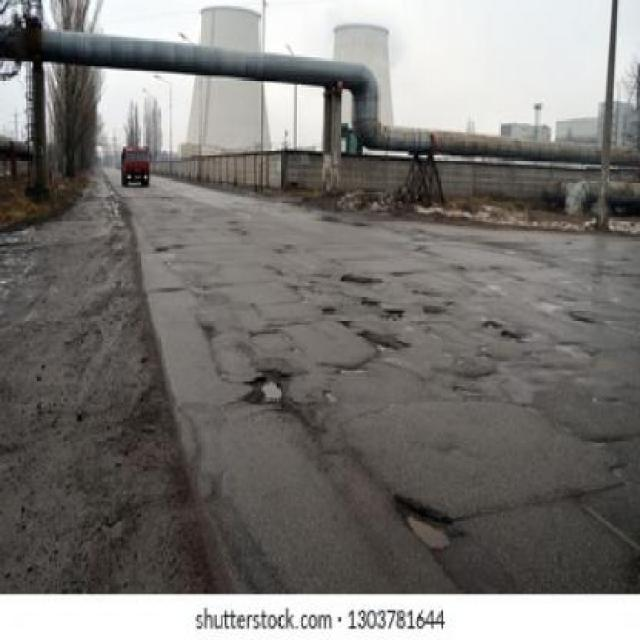
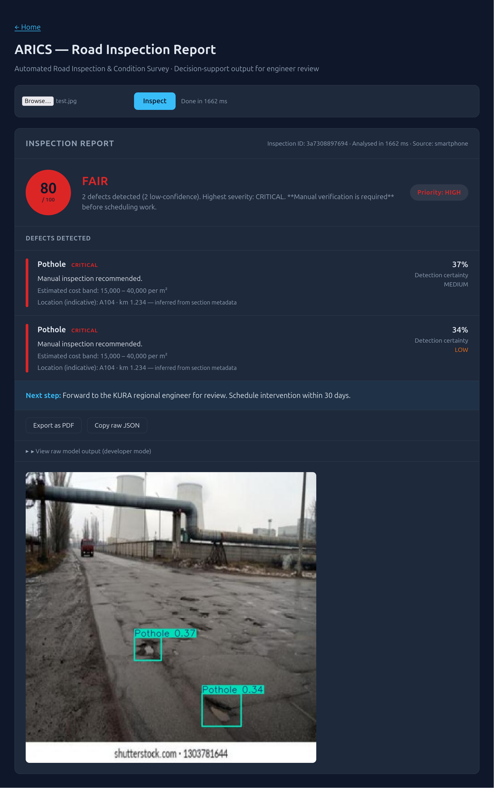
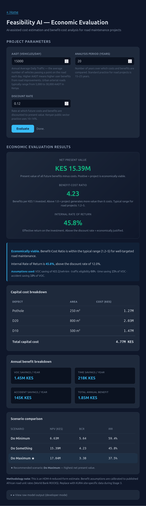

AI Barabara is a working prototype built in Kenya with KURA. You upload a road photograph. Computer vision identifies the defect. An HDM-4 economic engine tells you what it costs to fix and whether fixing it is worth the money. A qualified engineer makes the final call.
Upload a road photograph. In one pipeline, AI Barabara detects the defect, produces an engineer-facing report, and runs a full benefit-cost analysis. Scroll each panel to see the full output.

Input road photographA smartphone, vehicle-mounted camera, or drone. No specialist equipment, no manual survey. GPS metadata is optional.

ARICS annotated outputPothole or crack class, severity, confidence score, and GIS chainage. Low-confidence detections are flagged for manual verification.

Feasibility AI reportRepair cost, Net Present Value, Benefit-Cost Ratio, and IRR - with a plain-language interpretation a funder can read in 10 seconds.
Every output is decision-support. A qualified KURA engineer reviews and approves before any work is scheduled.
Trained, validated, and running today. KURA has already committed KES 14.87M to fund Phase 1.
The foundation of the platform: why open-source data is insufficient for Kenya, the domain-shift problem, and our local pilot imagery collection.
Explore the data →Computer-vision inspection of road imagery from smartphone, vehicle-mounted, or drone cameras. Detects four damage classes with confidence scores and GIS chainage. Replaces slow, subjective manual inspection with a repeatable, auditable process.
AI-assisted cost estimation and economic evaluation using an HDM-4 reduced-form engine. Produces NPV, Benefit-Cost Ratio, IRR, and scenario comparison over a user-defined analysis period — the same outputs a consumer expects from a full feasibility study.
Institutional AI-readiness assessment covering data availability, governance, ICT infrastructure, and capacity — establishing the baseline for integration with KURA's existing systems.
Try the assessment →Live KPIs, defect distribution, section condition, alerts, and maintenance priority ranking for engineers and management. Decision-support, not autonomous decisions — every output is reviewable and traceable.
A transparent, honest look at the ARICS model's performance. Metrics, confusion matrix, failure modes, and the compute constraints that define the next phase of work.
View validation report →Built to a nine-stage, human-in-the-loop methodology aligned with Kenya Roads Design Manuals, FIDIC, HDM-4, and the Data Protection Act, 2019. The full methodology document (v1.0, September 2026) is available on request.
KURA has committed KES 14.87 million for Phase 1 - a 24-month programme covering development, pilot, and knowledge transfer. That commitment funds the proof of concept. The transition to national and continental deployment requires three enabling conditions we are seeking through the ECA Innovation Café.
We are actively seeking partnerships for Phase 2 — specifically GPU compute resources, nationwide imagery collection, and development finance linkages. If you represent a funder, cloud provider, or road agency, let's talk.
Dr. John Wandeto
PhD, Computer Science
Origin Labs Africa
Point your phone camera at the code to open the live prototype.
ndetos.github.io/ai_barabara
For ECA Innovation Café correspondence, please contact sorene@un.org.